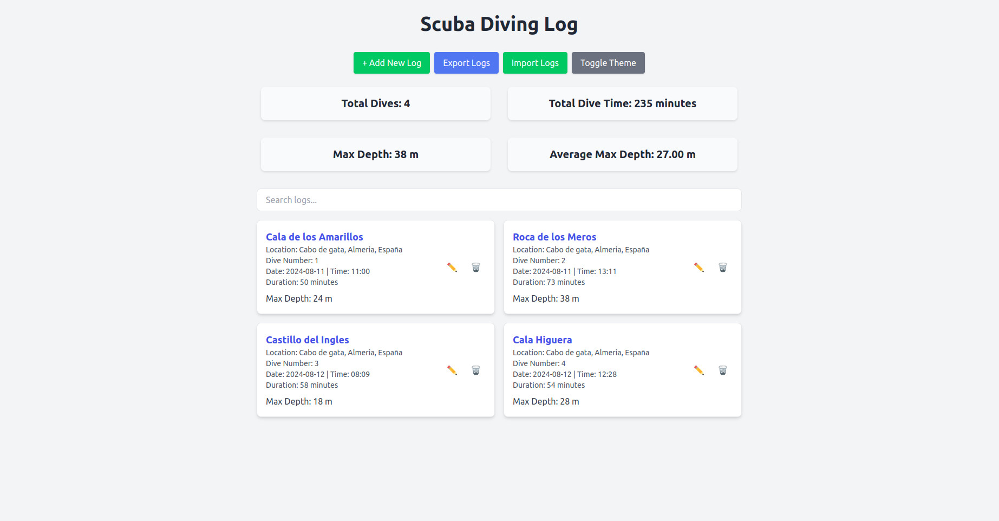

Scuba Diving Log Web App
A client-side web application for scuba divers to log, edit, and review their dive experiences.
Introduction
- Create, Edit, and Delete Diving Logs: Manage each dive experience with detailed information.
- Dark/Light Mode Toggle: Toggle between light and dark modes for comfortable viewing.
- Persistent Data Storage: Dive logs are stored locally on the browser using LocalStorage.
- Responsive UI: An adaptive design using Tailwind CSS that looks great on both mobile and desktop.
Below is a screenshot of the main interface, showcasing the dive log list and theme switcher.

How to Use
To get started, open the application in a web browser and follow these steps:
- Click on "Add New Log" to create a new dive log entry.
- Fill out the details for each field, including dive location, date, depth, and other relevant information.
- To edit or delete a log, use the respective icons on each entry.
- All data is stored locally in your browser, so you can return to your logs any time from the same device.
Development Process
This application was built to provide scuba divers a convenient way to record and review their dive experiences. The following steps outline the development process:
- Planning: We identified essential features for a scuba diving log, such as dive location, date, depth, and additional details about the dive experience.
- Design: Using Tailwind CSS, we created a clean, minimalistic design to enhance readability and ease of use.
- Development: The application was developed as a client-side app using HTML, CSS, and JavaScript, with data stored in LocalStorage for persistent logging.
- UI Enhancements: We added a theme switcher for light and dark mode, improved the layout, and ensured responsive design for various screen sizes.
- Testing and Refinement: The application was tested for usability, performance, and accessibility, with adjustments made for a smooth user experience.
Challenges and learnings
This application was built to provide scuba divers a convenient way to record and review their dive experiences. The following steps outline the development process:
- Planning: We identified essential features for a scuba diving log, such as dive location, date, depth, and additional details about the dive experience.
- Design: Using Tailwind CSS, we created a clean, minimalistic design to enhance readability and ease of use.
Future work
The Scuba Diving Log application is a simple, client-side solution for divers to record their underwater experiences efficiently. Designed with ease of use and flexibility in mind, it can be used both online and offline, offering essential features with a clean and responsive interface.